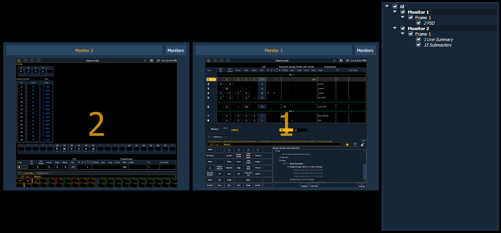
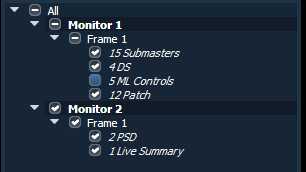
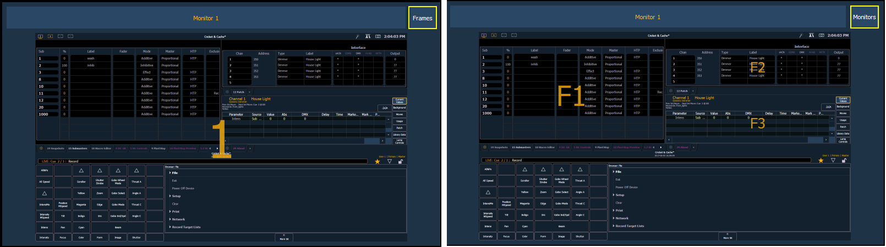

To store the current state of the console, record a snapshot.
When recording a snapshot, you will see a preview of all of the displays as they will be recorded in the snapshot. You can choose to select/ deselect various components, monitors, frames, etc from your snapshot.

From the snapshot menu, the following options are available:
You can choose to include or exclude monitors, frames, and tabs in the area below the snapshot menu by checking or unchecking in the list.
When a frame or tab has been excluded, an - icon will display to indicate that not everything on that monitor will be saved. A checkmark icon will display when everything on the monitor will be saved.

Monitors and frames can also be selected or deselected in the preview area. Use the {Frames/Monitors} button to select whether you will see monitor or frame numbers in the preview area.

When a monitor or frame has been deselected, it will be greyed out. Deselected frames will also have a small red circle with a slash on them.
See Display Controls Screen for information about arranging your monitors for better control when creating snapshots.